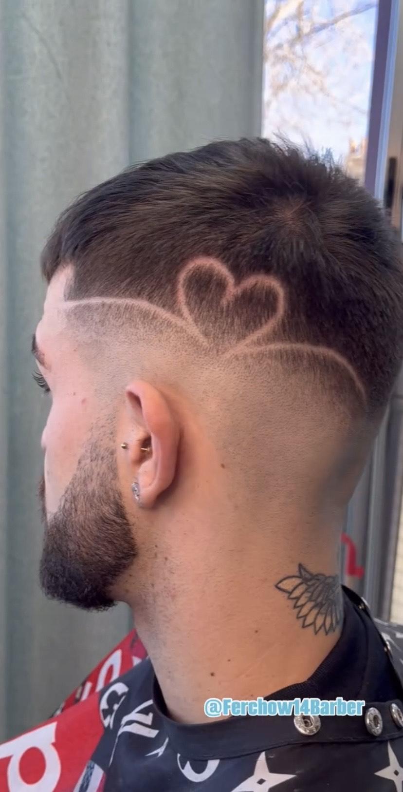
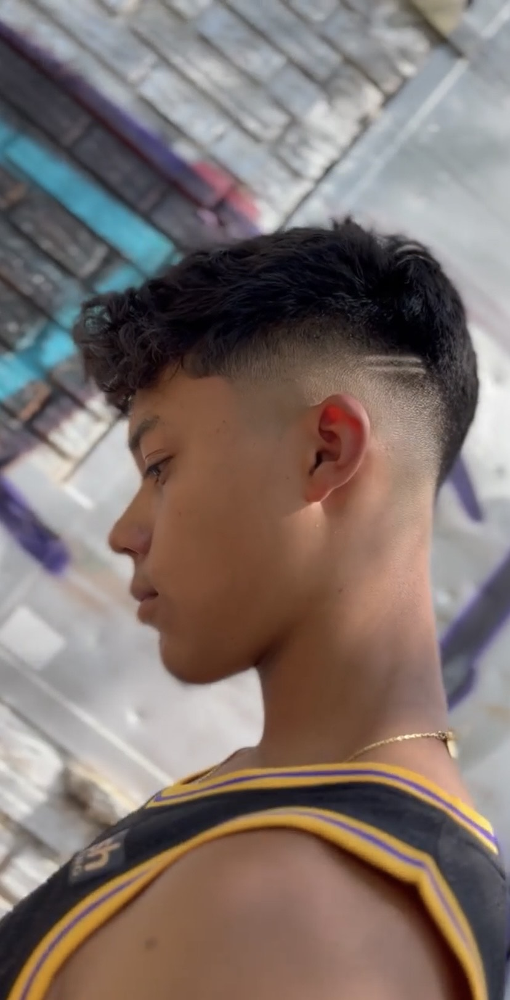
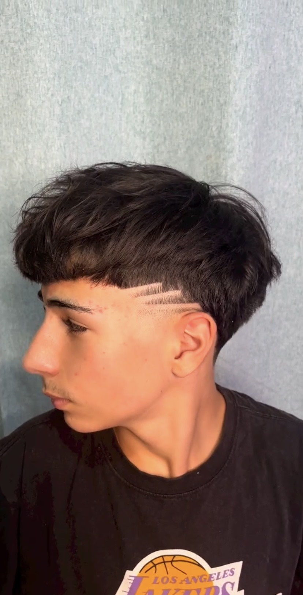
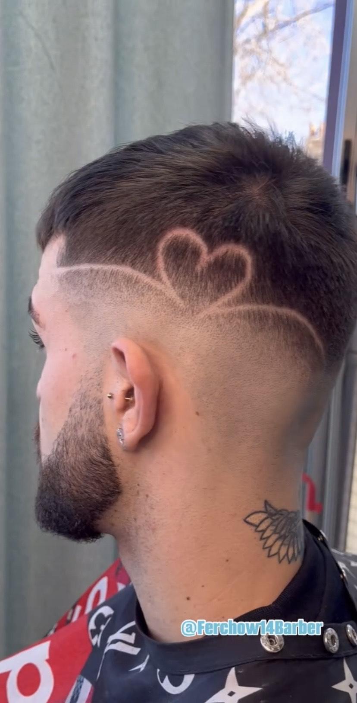
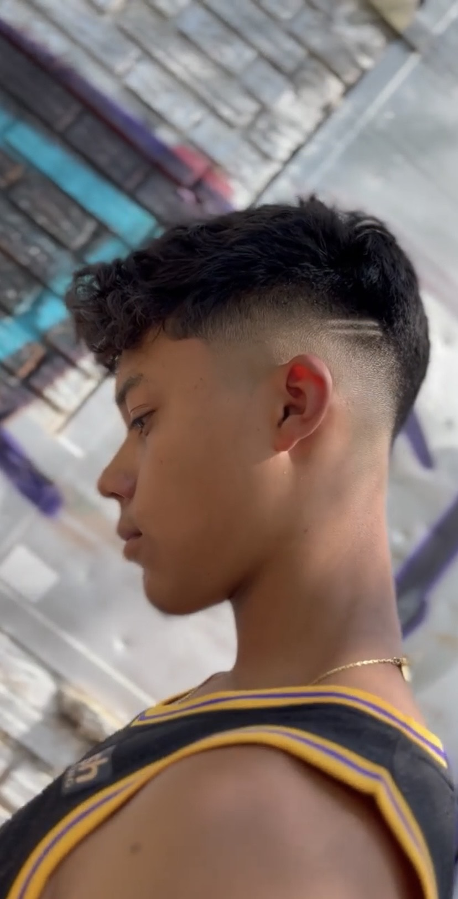
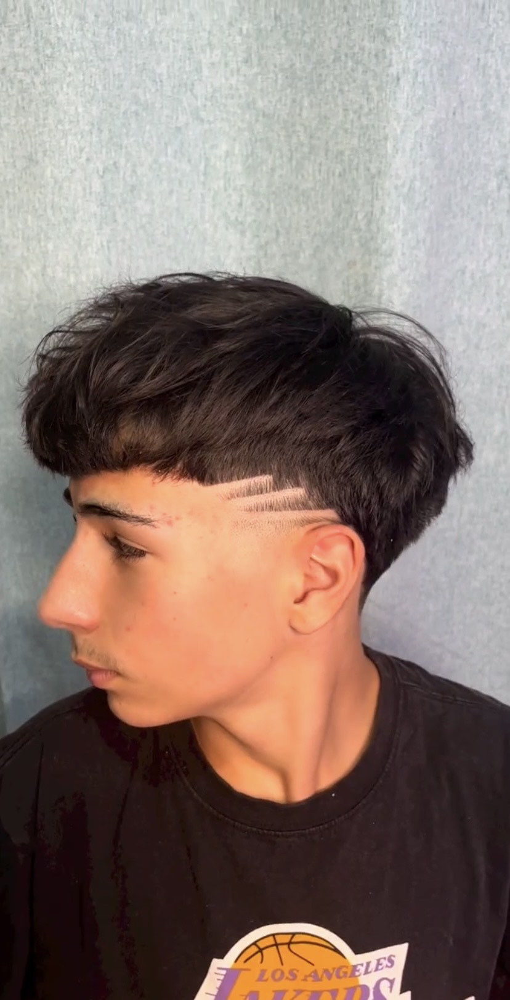

Bienvenido a Peluquería Ferxo
Nos especializamos en ofrecer cortes de pelo y afeitados de calidad con un toque de estilo clásico y moderno.
Somos un espacio diseñado especialmente para hombres que buscan algo más que un simple corte: buscamos resaltar lo mejor de ti, respetando tu personalidad y tu estilo único.
Nuestros servicios
- Cortes de cabello personalizados: Desde los cortes clásicos hasta los más modernos y atrevidos. Ya sea que prefieras un estilo tradicional o algo más contemporáneo, nuestros barberos se aseguran de que salgas con el look que mejor te representa.
- Afeitado clásico con navaja: Relájate y disfruta de un afeitado al estilo tradicional, con espuma caliente y navaja, para una experiencia de suavidad y precisión que solo nosotros sabemos ofrecer.
- Arreglo de barba: Ya sea que quieras mantenerla bien cuidada o darle un cambio de estilo, en Barbería NCO te ayudamos a conseguir la barba perfecta. También realizamos recortes y detallados para que luzcas siempre impecable.
- Diseño y mantenimiento de líneas: Para los que prefieren un estilo más marcado, nos especializamos en líneas definidas y detalles precisos en cortes y barbas.
- Cortes para caballeros: Estilos clásicos y sofisticados ideales para quienes buscan mantener una imagen elegante y cuidada.
 




